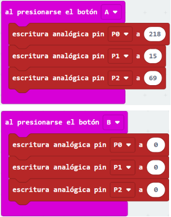

Sensor de luz
Un sensor de luz es aquel que detecta la intensidad de iluminación en un determinado momento, ofreciendo datos acerca de la mayor o menor oscuridad de un determinado espacio.
En realidad es un tipo de resistencia, llamada fotoconductor, célula fotoeléctrica o, más comúnmente, LDR (por sus siglas en inglés Light Dependent Resistor o resistencia dependiente de la luz).
La LDR modifica su valor de resistencia dependiendo de la luz que recibe. Cuanta más luz le llega, menor es el valor de la resistencia que tiene.
¿Cómo se puede conectar a la placa Micro:bit? Muy sencillo, solo tienes que observar los siguientes esquemas, el primero directamente y el segundo utilizando el adaptador de pines:
Te lo explico:
Como ves una patilla se conecta directamente a 3V y la otra lo hace, por un lado, a tierra (pin GND) atravesando una resistencia fija (incorporada a la placa en el segundo caso) y por el otro lado, se conecta directamente al pin número cero.
El pin 0 es analógico, porque la iluminación puede tomar más de dos valores.
Si fuera digital, solo podría informar de si hay o no luz, pero en el caso analógico dice si hay más o menos luz.
Programación del sensor de luz
Una vez que has conectado el sensor de luz a la placa, lo siguiente que tienes que hacer para que el conjunto funcione, es la programación de las instrucciones que hay que seguir para obtener el resultado buscado.
Vas a ver a continuación la solución, en el entorno de programación MakeCode, del caso en que la matriz de leds de Micro:bit deba mostrar la lectura de un sensor de luz externo.
Observa detenidamente qué instrucciones se utilizan y cómo se combinan los bloques entre sí.

LED RGB
Un LED RGB toma el nombre del diodo emisor de luz (traducción del acrónimo inglés LED, "Light Emitting Diode") de colores obtenidos por la mezcla de rojo, verde y azul (cuyas iniciales en inglés son respectivamente R, G y B) que es capaz de generar millones de tonos diferentes.
Se trata de un actuador lumínico que tiene cuatro patillas una para gestionar cada color y otra para conectar a GND o 3V según el caso.
¿Cómo se conecta a la placa Micro:bit? Solo tienes que ver las siguientes imágenes.
Te lo explico:
En la primera imagen, cada patilla del LED se conecta a un terminal de la placa.
La patilla que conecta la tierra se une mediante el cable negro al pin GND. La que conecta el color rojo se une, a través de una resistencia fija con el cable rojo, al pin 2, la del verde, con el cable de color verde, al pin 1 y la del azul, con el cable de color azul, al pin 0. Estas dos últimas conexiones también utilizan resistencias fijas, que en todos los casos actúan para proteger al LED de una intensidad de corriente superior a la que soportaría.
En la segunda imagen, el LED viene integrado en una placa que incorpora las resistencias necesarias y tiene 4 patillas que se conectan a los terminales del adaptador.
La patilla "V" se conecta a un pin de tensión mediante el cable rojo. La "R", que conecta el color rojo, se une con el cable magenta, al pin 1, la "G" del verde, va al pin 2 con el cable de color verde y la "B" del azul, llega al pin 0 con el cable de color azul.
Todos los pines de datos son analógicos, para poder gestionar la intensidad de cada color en cada momento, según se programe, estableciendo la mezcla específica que dé como resultado un determinado tono de color.
Programación del LED RGB
Una vez que has conectado el LED RGB a la placa, lo siguiente que tienes que hacer para que el conjunto funcione, es la programación de las instrucciones que hay que seguir para obtener el resultado buscado.
Vas a ver a continuación, para el caso del LED que no tiene placa, la solución, en el entorno de programación MakeCode, del caso en el que al pulsar el botón A, se encienda el LED RGB con una combinación de valores de 69 para el rojo, 218 para el azul y 15 para el verde. Al pulsar el B, apagarlo.
Observa detenidamente qué instrucciones se utilizan y cómo se combinan los bloques entre sí.

Para el caso del LED que tiene placa, se hace al contrario. Observa que el LED no se conecta a tierra (GND), sino a 3V, por lo que a la hora de programarlo, los valores van al contrario, ya que la tensión entre un puerto con valor 1023 (valor alto) y el de 3V es cero y al contrario cuando es 0 (valor bajo).


{kind=link}
{kind=link}
{kind=link}
{kind=link}
{kind=link}
{kind=link}